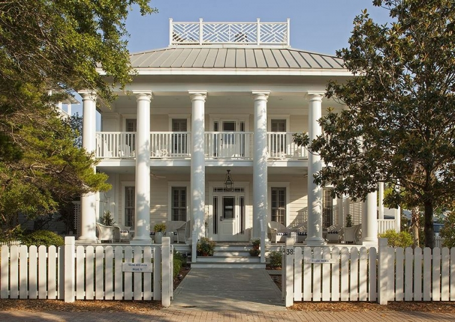
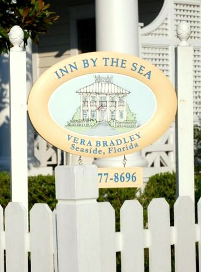
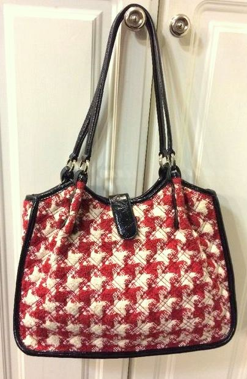

.png)
.PNG)
.PNG)
.PNG)
.PNG)
.JPG)
.JPG)
.PNG)
.PNG)


source
Let’s travel today. ¬†We haven’t done that in quite some time, have we? ¬†If you didn’t know better, you might think the house above is a typical old antebellum mansion in the South, but if you have vacationed in Seaside, Florida, you will recognize the white picket fence with the small signs naming the town’s homes. ¬†The house isn’t an old Southern mansion at all. ¬†It was actually built in 1989-1990 and operated for a number of years as Josephine’s French Country Inn –¬†the only bed and breakfast in Seaside. ¬†I have been unable to locate any good interior photos from when it was run as Josephine’s, but from the descriptions I’ve read, it was dark, filled with many pieces of mahogany furniture, and had brass light fixtures…not exactly what you usually have in mind when you think of accommodations at the beach, but at some point in its 15 years of operation, it was voted one of the top twelve inns in America by Country Inns magazine. ¬†Apparently people liked it, but the owners retired, and the inn was sold in 2007. ¬†The new owners wanted a new look for the inn, so they hired Barbara Bradley Baekgaard. ¬†Do you recognize that name?
Let me give you a hint…
How about the name… Vera Bradley?
That one probably rings a bell. ¬†In fact, I bet many of you own a handbag or two with that name on it. üôÇ ¬†I am not much of a fan of the florals and paisleys, but my all time favorite handbag is a Vera Bradley one I own like this one:
ebay.com
So where were we? Oh yes, the inn…Barbara Bradley Baekgaard is one of the co-founders of Vera Bradley,and she was commissioned to brighten up the interiors of the inn. ¬†And boy did she brighten them up with color and pattern!
¬†Here is the dining room…
(Don’t you love the slipcovers on the chairs?!)
The lobby wasn’t quite as bright,but I like the green mats with the P. Kauffman Artissimo fabric on the sofa.

Check out this bathroom… red wicker!
On June 8, 2007 the inn reopended as the Inn by the Sea, but by 2009, it was on the market for sale again. üôÅ This time it finally sold as a private residence on July 5,2012. But the story doesn’t end there. Now the house is available as an 8 bedroom rental…perfect for family reunions or small weddings. ¬†So now I want us to take a look at how the interiors of the home have changed from when it was the inn.
This room was formerly called The True Blue room in the Vera Bradley Inn.
Here is how it looks today in the rental house. ¬†It appears they kept the wallpaper and some of the furnishings, but the pretty plaid carpet and some of the linens have been changed. ¬†Doesn’t the former carpet make such a big difference?!
Here is another blue bedroom from the inn, this time with buffalo check carpet. üôÇ
And now as it appears today.  Same bed, chairs, and wallpaper, but again the unique carpet is gone.
Obviously, Barbara Bradley Baekgaard is fearless when it comes to combining colors and patterns. üôÇ My favorite room from the inn was The Sunset Room.
It still has its toile mixed with red today in the home as a rental (but I like the white matelasse better.) This room is located in the carriage house behind the main house and available as a separate rental if you need a smaller space.
I also like this yellow toile bedroom in the rental, and the check carpeting is still there. üôÇ
I think the lobby area may be very much like it appeared in the inn.
But the owners made big changes in a new living room, dining area,and kitchen.  My guess is that this space was formerly the dining room in the inn.
I think they did a beautiful job with it! ¬†Don’t you?
I could not find a photo of how the porch is furnished today, but this is what it looked like when the house was an inn…super pretty with all that blue and white!
So are you ready for a beach trip?  Looks like a nice place to stay with a large group. (It can sleep up to 22!)  I hope you enjoyed seeing how it has changed over the years.
I wonder if someone will turn it back into an inn in its next life. üôÇ
Until next time…

p.s.  Jenny Steffens Hobick had her wedding at The Inn by the Sea, and she has a nice post about it here.
(Looks like she stayed in the True Blue room.)


.PNG)
I want your purse!!!! Like you, I am not a huge fan of the floral purses…. They seem to clash with most outfits(ha ha, I say that like I dress really nice…NOT)
Thanks for a pretty post!
Love it! Thanks for sharing and have a good week!!
———————————————————————-
So glad you enjoyed it Carmen. Thank you for reading!
Kelly
You had me with the blue and white. I love blue and white! And checks! You are so right about the carpet. The solid carpet just made the rooms seem…well…dull. My family will have to grow a little before we need a place that big. But one day…one day!
———————————————————————
Jayne, I hope you and your family do get to enjoy that big house one day!
Kelly
I thought this former inn looked familiar, I’ve read Jenny Steffens Hobick’s post from her wedding in a Seaside! I’ve been dreaming of a a Seaside vacation ever since! I must say I totally love your posts on traveling & inns! I’ve been reading some of your passed posts recently & I love that You look for the same charming places to stay with character as I do when I’m selecting a place to visit! A girl after my own heart! I love what the new owners have done with the main floor of this now rental home too it looks great.
——————————————————————–
The main floor is definitely your “cottage style” Carrie. You would be right at home in this house, AND in Seaside. It is a wonderful place to visit!
Kelly
Kelly,
I love all of the touches the Inn had. Those red checked lamp shades in the bathroom are my favorite! They make that red wicker chair pop! I also appreciate the mixes of colors and patterns. I wish I could be so brave and bold! Thanks for sharing this inspiration with us. Have a great weekend. Take care.
—————————————————————–
You are right about those bathroom lampshades. They do add just the right accent with my red wicker chair. üôÇ I am never that bold either, Dawn. I play it safe way too many times.
Kelly
Such a fun and interesting post. How about that porch!!!
——————————————————————–
That porch is heavenly!
Kelly
Love it! Would you believe I had just been thinking that I needed to see a beach post!!! (Seriously, you always seem to post on what I want to see!) I like the checked carpet better than the solids too but I am not really a fan of carpet anywhere. My favorite room was the kitchen/family room. I am not in love with those purses either but I do have a solid black one that was a nice gift.(Maybe I will get it out and have it monogrammed.) As for wallpaper, I still have two rooms with it but they sometimes makes me feel like I am living inside a gift box. Thanks for the trip to Seaside. I have actually been there because of seeing it on blogs. It is a gorgeous area.
——————————————————————-
Wasn’t that family room nice? I laughed out loud at your “living inside a gift box.” So true! Seaside is wonderful, and a trip there is much needed right now. But it way too early to start craving beach houses! (Although we did make a trip to Seaside one year for Valentine’s Day! üôÇ )
Kelly
Another one for the bucket list….Oh, Seaside. You had me at the front porch with all that wicker. I can hear the ocean and feel the breeze. Ok, raised hand on the paisley and floral. Guilty. I have three purses, along with a backpack and coordinating towel that I like for the summer. That is the only time that they come out. I guess it’s just one of the downfalls of living near an outlet, shopping with a sister that knows every pattern and is a little, no a lot….obsessed. Ha. üôÇ That purse on Ebay is so fun in the red houndstooth. Love it. I usually don’t have much luck when it comes to Ebay, do you? üôÅ I guess I stay too low/reasonable on my bids. It’s a “Killer” when you see the price escalating at the end and you have been watching and waiting. Thank you for the visual goodness as always Kelly. Now, don’t mind me while I sip some of my Peach Tea Snapple, scroll back up and sigh! üôÇ
——————————————————————–
I do believe you are a true Vera fan, Debra! (And your sister must be as well. üôÇ ) I have great luck with Ebay because I do the “buy it now” things. All of our Christmas dishes came from there.
Enjoy all the links in the post!
Kelly
i could pack my bags and move into that gorgeous home right now!!!…
———————————————————————-
I want to come with you Shirley! üôÇ
Kelly
Kelly,
What a gorgeous house and I really like what the owners did to it. It still exudes charm but seems a little calmer than the multi-patterned layers that Vera Bradley had done.
Have a great weekend.
xo
Karen
———————————————————————-
The change in carpet toned down the bedrooms, and the new living area and kitchen seems very relaxing. It would be a fun house to stay in!
Kelly
I love the porch! Beautiful! Thanks for sharing and have a great weekend!
——————————————————————-
All that white wicker mixed with blue and white buffalo check…how can it get better on the porch?!
Kelly
I am in love with this house! I always love to go into Vera Bradley stores because they are so beautifully decorated. Have a great weekend!
——————————————————————–
If you are a fan of Vera Bradley, then you should most definitely love this house! And when it was operated as an inn, they gave away Vera Bradley bags that coordinated with the room you stayed in with each visit! (You would have been in Heaven with that, right Katie?)
Kelly
Just in time to take the chill off! I love these visits. And I adore those buffalo checked chair slips with their cute button backs in the dining room of the Inn.
——————————————————————–
I thought those slipcovers with the buttons were perfection! I need someone to make some like that for me. üôÇ
Kelly
Love this style, absolutely beautiful, but I would be afraid to vacation with my family with white furniture!
Sit outside with that chocolate ice cream!!!
——————————————————————
I had not thought of that! We would have the chocolate ice cream too…perhaps sitting at the counter in the kitchen. üôÇ Hopefully, those slipcovers can be easily washed.
Kelly
I check your blog daily as it is my favorite…and have thoroughly enjoyed my time with you as an invited guest in your beautiful home…I have to say…I also love it when we “travel” together to visit other places. Your picks are always so perfect to peek in!
Hope you Dad-in-law is feeling better these days!
———————————————————————-
You are so sweet to say such things about the house and blog, Shelley! Thank you. I am glad you are enjoying all the houses here. Yes, my father in law is doing much better and is home from the hospital. üôÇ
Kelly
Beautiful! I like the carpets Baekgaard choose so much better, the replacements are boring. Maybe the new owners felt they would not appeal to most people, but I think they were wrong. Really a lovely house,inn,rental…..I would love to stay there.
———————————————————————
I think perhaps some of those patterned carpets aren’t made anymore…at least the ones I have looked at like them are not. So that might be why they did not get replaced with matching patterns. They really made the room though.
Kelly
It looks like an amazing inn Рjust love the living area kitchen combo…gorgeous!!
——————————————————————-
I love that new living area and kitchen too…looks like a place of calm in house with a lot of pattern. üôÇ
Kelly